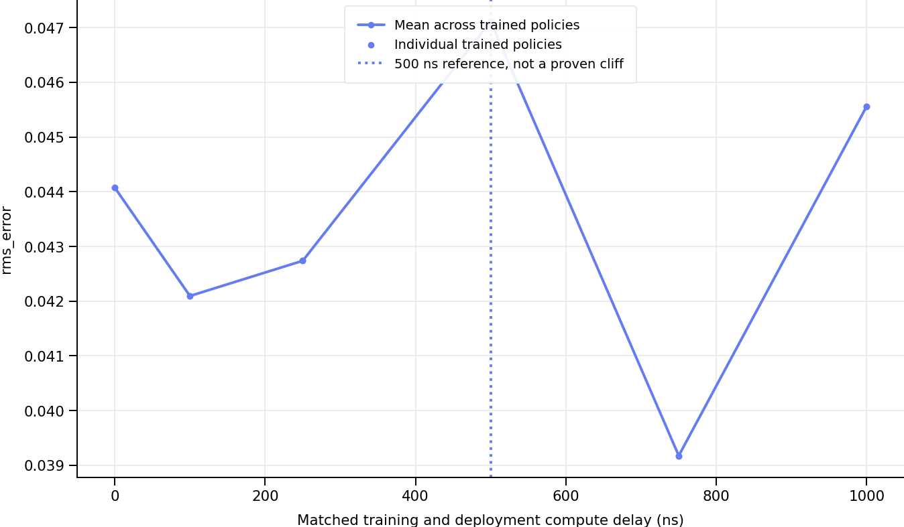
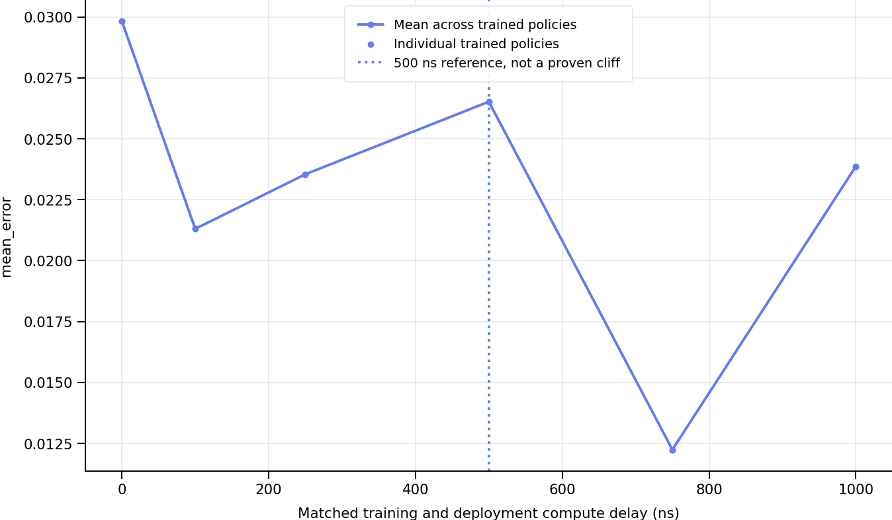
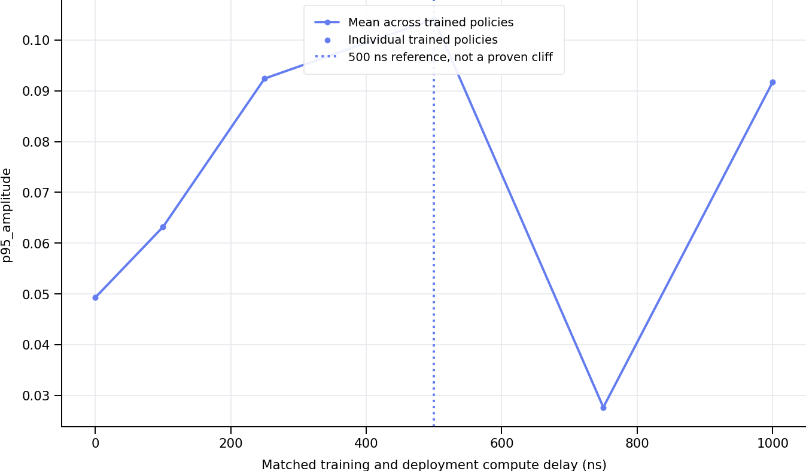
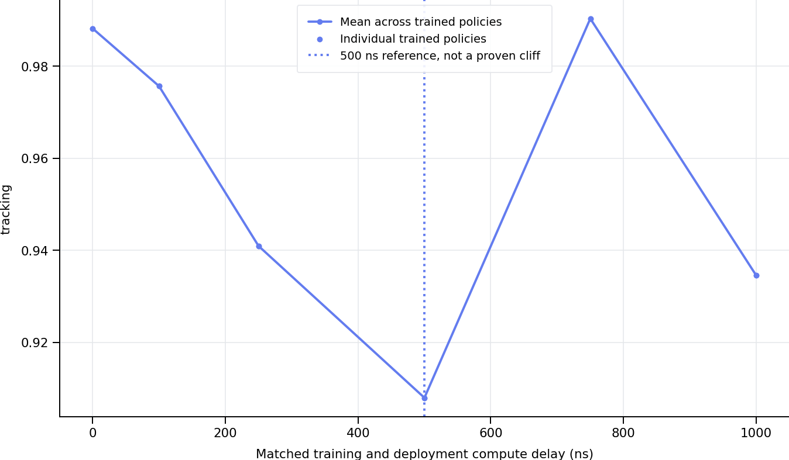
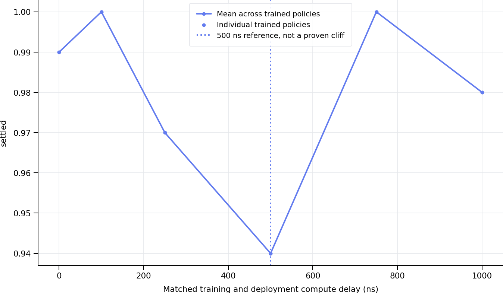
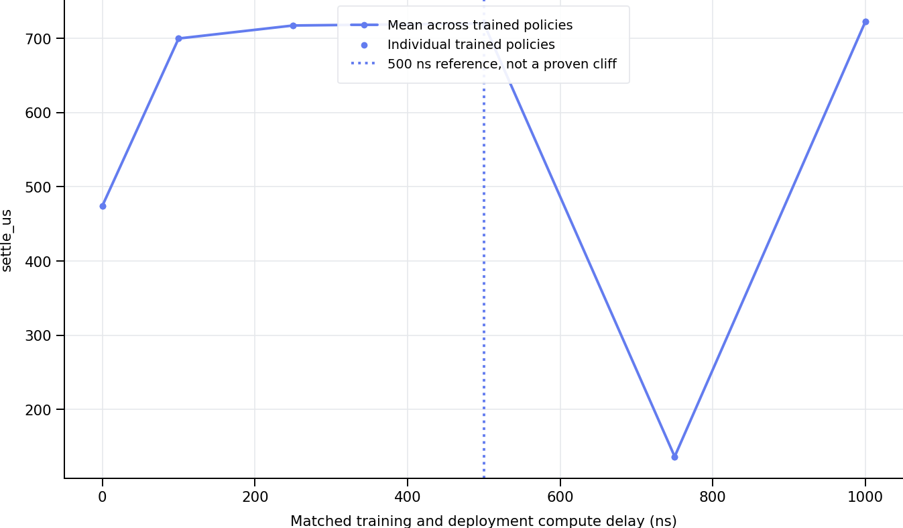

Each model is evaluated only at its training delay. Curves are numerically sorted. Points are means across evaluation episodes; aggregate means weight trained policies equally. Error bars show one standard error between trained policies when at least two exist. A single training seed cannot establish training robustness. Settling time is conditional on success; inspect settled and loss fractions alongside it. 500 ns is a reference, not an imposed failure threshold. Simulation budgets are separate from measured host runtime. Profiles are not machine calibrated.
| latency_ns | training_runs | rms_error | rms_error_n_models | rms_error_se_between_models | mean_error | mean_error_n_models | mean_error_se_between_models | p95_amplitude | p95_amplitude_n_models | p95_amplitude_se_between_models | tracking | tracking_n_models | tracking_se_between_models | lost | lost_n_models | lost_se_between_models | settled | settled_n_models | settled_se_between_models | settle_us | settle_us_n_models | settle_us_se_between_models |
|---|---|---|---|---|---|---|---|---|---|---|---|---|---|---|---|---|---|---|---|---|---|---|
| 0.0 | 1 | 0.044075 | 1 | NaN | 0.029830 | 1 | NaN | 0.049267 | 1 | NaN | 0.988213 | 1 | NaN | 0.0 | 1 | NaN | 0.99 | 1 | NaN | 473.980546 | 1 | NaN |
| 100.0 | 1 | 0.042094 | 1 | NaN | 0.021302 | 1 | NaN | 0.063183 | 1 | NaN | 0.975688 | 1 | NaN | 0.0 | 1 | NaN | 1.00 | 1 | NaN | 699.655556 | 1 | NaN |
| 250.0 | 1 | 0.042737 | 1 | NaN | 0.023542 | 1 | NaN | 0.092410 | 1 | NaN | 0.940951 | 1 | NaN | 0.0 | 1 | NaN | 0.97 | 1 | NaN | 717.174494 | 1 | NaN |
| 500.0 | 1 | 0.047113 | 1 | NaN | 0.026520 | 1 | NaN | 0.104131 | 1 | NaN | 0.907968 | 1 | NaN | 0.0 | 1 | NaN | 0.94 | 1 | NaN | 719.846336 | 1 | NaN |
| 750.0 | 1 | 0.039175 | 1 | NaN | 0.012241 | 1 | NaN | 0.027662 | 1 | NaN | 0.990360 | 1 | NaN | 0.0 | 1 | NaN | 1.00 | 1 | NaN | 136.462963 | 1 | NaN |
| 1000.0 | 1 | 0.045563 | 1 | NaN | 0.023866 | 1 | NaN | 0.091748 | 1 | NaN | 0.934562 | 1 | NaN | 0.0 | 1 | NaN | 0.98 | 1 | NaN | 722.743764 | 1 | NaN |







| environment | dynamics_profile | model | trained_ns | deployed_ns | total_action_ns | inference_jitter_ns | latency_source | backend | episodes | rms_error | rms_error_n | rms_error_std | rms_error_se | mean_error | mean_error_n | mean_error_std | mean_error_se | p95_amplitude | p95_amplitude_n | p95_amplitude_std | p95_amplitude_se | settle_us | settle_us_n | settle_us_std | settle_us_se | lost | lost_n | lost_std | lost_se | settled | settled_n | settled_std | settled_se | tracking | tracking_n | tracking_std | tracking_se | damping_per_us | damping_per_us_n | damping_per_us_std | damping_per_us_se |
|---|---|---|---|---|---|---|---|---|---|---|---|---|---|---|---|---|---|---|---|---|---|---|---|---|---|---|---|---|---|---|---|---|---|---|---|---|---|---|---|---|---|
| accelerator | uncertain | experiments/models_uncertain/accelerator_uncertain_lat_0ns_paper16_s0 | 0.0 | 0.0 | 0.0 | 25.0 | budget | numpy | 100 | 0.044075 | 100 | 0.001161 | 0.000116 | 0.029830 | 100 | 0.000563 | 0.000056 | 0.049267 | 100 | 0.000799 | 0.000080 | 473.980546 | 99 | 226.132437 | 22.727165 | 0.0 | 100 | 0.0 | 0.0 | 0.99 | 100 | 0.100000 | 0.010000 | 0.988213 | 100 | 0.002734 | 0.000273 | 0.000118 | 100 | 0.000017 | 0.000002 |
| accelerator | uncertain | experiments/models_uncertain/accelerator_uncertain_lat_100ns_paper16_s0 | 100.0 | 100.0 | 100.0 | 25.0 | budget | numpy | 100 | 0.042094 | 100 | 0.001169 | 0.000117 | 0.021302 | 100 | 0.000348 | 0.000035 | 0.063183 | 100 | 0.001091 | 0.000109 | 699.655556 | 100 | 32.901735 | 3.290173 | 0.0 | 100 | 0.0 | 0.0 | 1.00 | 100 | 0.000000 | 0.000000 | 0.975688 | 100 | 0.003285 | 0.000328 | 0.000153 | 100 | 0.000036 | 0.000004 |
| accelerator | uncertain | experiments/models_uncertain/accelerator_uncertain_lat_250ns_paper16_s0 | 250.0 | 250.0 | 250.0 | 25.0 | budget | numpy | 100 | 0.042737 | 100 | 0.001074 | 0.000107 | 0.023542 | 100 | 0.000696 | 0.000070 | 0.092410 | 100 | 0.001953 | 0.000195 | 717.174494 | 97 | 20.125231 | 2.043408 | 0.0 | 100 | 0.0 | 0.0 | 0.97 | 100 | 0.171447 | 0.017145 | 0.940951 | 100 | 0.009897 | 0.000990 | 0.000111 | 100 | 0.000040 | 0.000004 |
| accelerator | uncertain | experiments/models_uncertain/accelerator_uncertain_lat_500ns_paper16_s0 | 500.0 | 500.0 | 500.0 | 25.0 | budget | numpy | 100 | 0.047113 | 100 | 0.001687 | 0.000169 | 0.026520 | 100 | 0.000944 | 0.000094 | 0.104131 | 100 | 0.002726 | 0.000273 | 719.846336 | 94 | 16.902872 | 1.743398 | 0.0 | 100 | 0.0 | 0.0 | 0.94 | 100 | 0.238683 | 0.023868 | 0.907968 | 100 | 0.012476 | 0.001248 | 0.000147 | 100 | 0.000043 | 0.000004 |
| accelerator | uncertain | experiments/models_uncertain/accelerator_uncertain_lat_750ns_paper16_s0 | 750.0 | 750.0 | 750.0 | 25.0 | budget | numpy | 100 | 0.039175 | 100 | 0.000794 | 0.000079 | 0.012241 | 100 | 0.000225 | 0.000022 | 0.027662 | 100 | 0.001043 | 0.000104 | 136.462963 | 100 | 214.169492 | 21.416949 | 0.0 | 100 | 0.0 | 0.0 | 1.00 | 100 | 0.000000 | 0.000000 | 0.990360 | 100 | 0.000911 | 0.000091 | 0.000272 | 100 | 0.000085 | 0.000008 |
| accelerator | uncertain | experiments/models_uncertain/accelerator_uncertain_lat_1000ns_paper16_s0 | 1000.0 | 1000.0 | 1000.0 | 25.0 | budget | numpy | 100 | 0.045563 | 100 | 0.000966 | 0.000097 | 0.023866 | 100 | 0.000535 | 0.000053 | 0.091748 | 100 | 0.001444 | 0.000144 | 722.743764 | 98 | 12.914581 | 1.304570 | 0.0 | 100 | 0.0 | 0.0 | 0.98 | 100 | 0.140705 | 0.014071 | 0.934562 | 100 | 0.007163 | 0.000716 | 0.000082 | 100 | 0.000092 | 0.000009 |